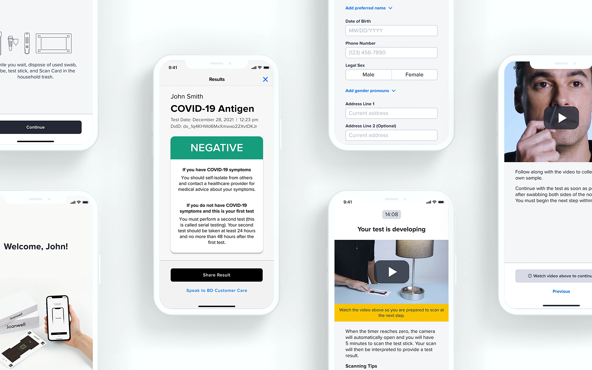
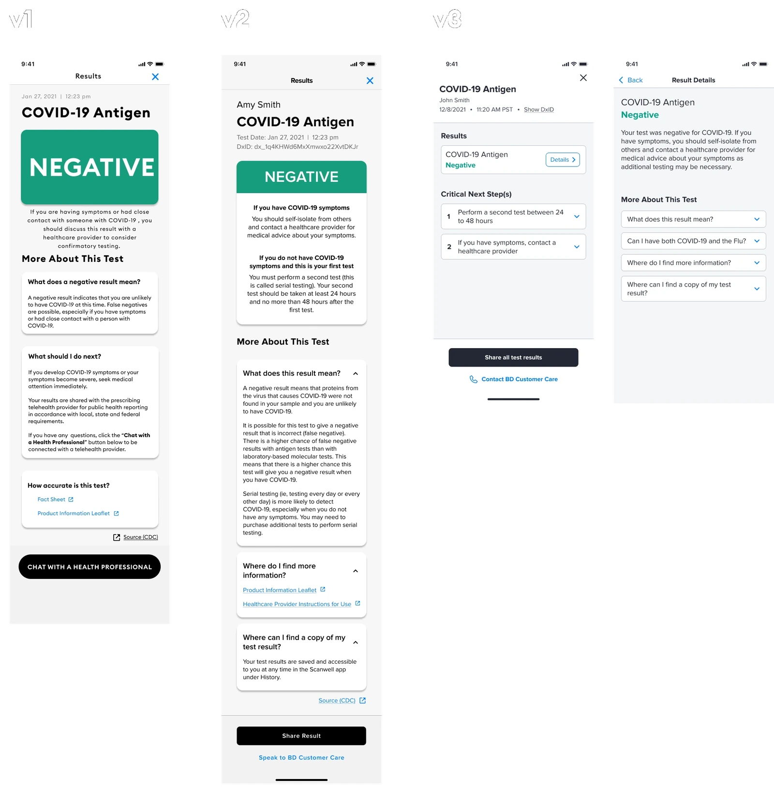

Founding designer on the first digitally-read, at-home COVID-19 test, now used by over a million people
Overview
I was a founding designer (1 of 3) on Scanwell’s partnership with BD to build the first digitally-read, at-home COVID-19 test. I owned UX across the full experience, including instruction design, interaction design, and system design, and drove user research and usability testing from discovery through FDA authorization and launch.
I joined Scanwell in December 2020, right as the BD partnership was becoming the company’s top priority. It was a small, fast-moving team, so I had real ownership from day one. Within my first 30 days I delivered a usability report on our v0 design, presented findings to senior stakeholders at both companies, and sat in on packaging and FDA regulatory meetings. The product launched on Amazon in October 2021 as the first digitally-read at-home COVID test on the market, and has since been used by over a million people.
Here are three problems from this project that best show how I think.

Getting users into good testing conditions before it’s too late
Because the test can be taken anywhere, accuracy depended on the phone camera reading the result correctly, which meant lighting had to be right and users only had a 5-minute window once the test stick was activated. Research showed most users had no real sense of what “good lighting” meant and weren’t going to self-correct in the middle of a test. I made the call that this had to be solved before the 5-minute clock even started, not during it.
That led to Home Lighting Check, a dedicated scanning step at the start of the flow that I designed and iterated through multiple rounds of moderated usability testing (n≥30 per round). The feature shipped with video guidance I also produced, and it drove a 21.4% increase in scan success rate. It ended up being one of the highest-leverage design decisions on the whole product.
Redesigning for repeat users in one week
Once testing became a requirement for entry to schools, offices, and restaurants, we started seeing a wave of repeat users, some testing weekly. The problem was the flow made everyone watch full video instructions every single time, so a 5-minute test could easily take 15. We started getting complaints within two weeks of launch.
The redesign had three real constraints. The flow was already FDA-cleared and clinically validated, so changes had to be low-risk from a usability standpoint. Engineering had almost no bandwidth to spare. And the design needed to ship in a week. I worked with two other designers, and we ruled out the obvious shortcuts (cutting copy, merging steps, trimming the videos down) because they would have traded long-term instruction quality for short-term speed.
We landed on a looped video preview in place of a static thumbnail. Repeat users get a quick visual reminder instead of having to recall the steps from memory, while still being able to watch the full instructions if they want. It shipped on time, and it also set up a clear next step: running an A/B test against a real definition of “experienced user” based on testing frequency, not just a repeat count.
Designing a results screen that’s clear, medically accurate, and compliant
The results screen had three things pulling against each other: FDA-mandated language that could get dense and jargon-heavy, real complexity in explaining a rapid-test result responsibly, and the need for a template flexible enough to extend to future tests as Scanwell built out its first design system.
My process here was simple but disciplined. I laid out every piece of information the screen legally and practically needed, then ranked it by what users actually needed to act on. Testing v1 (200 users, through a clinical study) showed people had no trouble reading positive or negative, but almost nobody understood what to do next. v2 moved the explanation next to the result itself and collapsed the FAQs into accordions to cut down on cognitive load. Comprehension went up, but “what do I do now” was still getting buried under the bold result text. v3 pushed the medical definition to a secondary page entirely and led with clearly labeled “critical next steps,” a direct response to what we’d learned: users cared far more about what to do than about the clinical explanation of why.
I also led design of the reusable results template used for future test types, and built WCAG-compliant text scaling in from the start instead of bolting it on later.

Other work and Takeaways
Other work at Scanwell
- Led 8 competitive analyses over 3 months that directly shaped product and design decisions
- Explored a server-driven UI app builder with backend engineering, an ambitious bet on scalable architecture that didn’t ship, but sharpened how I think about design systems at scale
- Ran a company-wide Accessibility Design Jam and presented the findings to the full company
- Built and maintained Scanwell’s first production design system, refined through ongoing WCAG audits
Takeaways
This project taught me how to triage constraints (regulatory, technical, human) under real time pressure, and how to make calls with incomplete information when a deadline isn’t moving. It also confirmed what I look for in my work: high-stakes problems where good design has a direct, measurable effect on people’s lives.